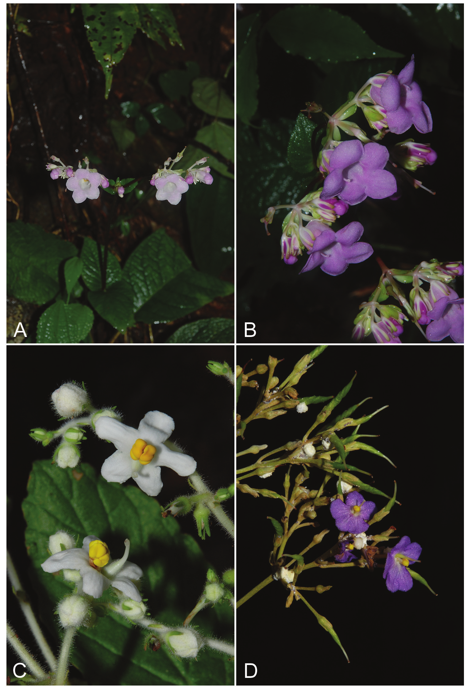
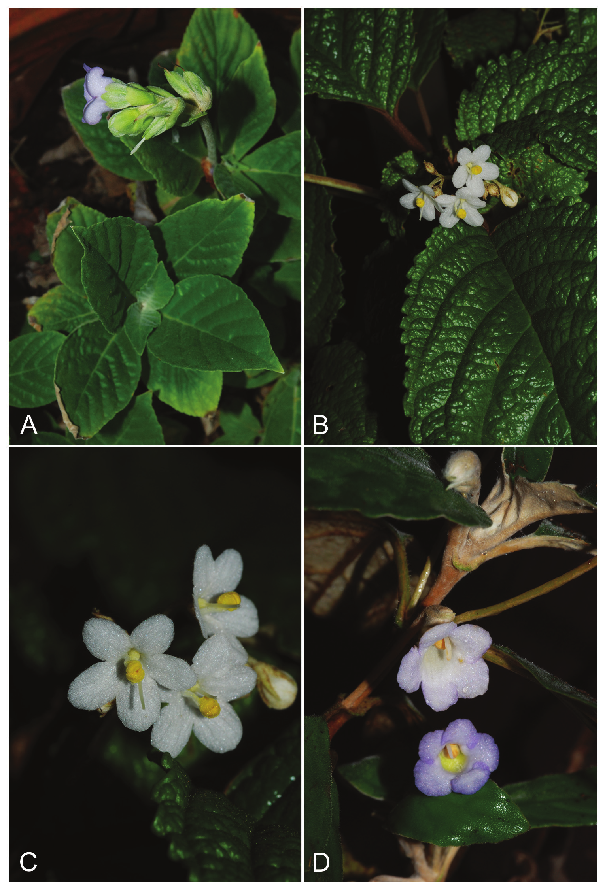

Twenty new species of Paraboea (Gesneriaceae) from Thailand
Triboun, Pramote, Middleton, David J
Abstract
Twenty new species of Paraboea are described from Thailand: Paraboea arachnoidea Triboun, Paraboea axillaris Triboun, Paraboea bhumiboliana Triboun & Chuchan, Paraboea doitungensis Triboun & D.J. Middleton, Paraboea eburnea Triboun, Paraboea insularis Triboun, Paraboea lavandulodora Triboun, Paraboea monticola Triboun & D.J. Middleton, Paraboea nana Triboun & Dongkumfu, Paraboea nobilis Triboun & D.J. Middleton, Paraboea peninsularis Triboun & D.J. Middleton, Paraboea phanomensis Triboun & D.J. Middleton, Paraboea quercifolia Triboun, Paraboea rosea Triboun, Paraboea sangwaniae Triboun, Paraboea siamensis Triboun, Paraboea takensis Triboun, Paraboea tenuicalyx Triboun, Paraboea vachareea Triboun & Sonsupab and Paraboea xylocaulis Triboun. Full descriptions and conservation assessments are provided for all taxa.
Full text
Full text is available as a scanned copy of the original print version.
Get a printable copy (PDF file) of the
complete article, or click on a page image below to browse page by page.
Links are also available for
Selected References.
Images in this article
Fig. 1 A. Paraboea arachnoidea Triboun. B. Paraboea axillaris Triboun. C–D. Paraboea bhumiboliana Triboun & Chuchan. (Photos: P. Triboun)
Fig. 2 Paraboea doitungensis Triboun & D.J.Middleton. A. Habit. B. Flower, lateral view. C. flower, front view showing enantiostyly. D. Calyx opened out. E. Corolla opened out. F. Ovary and style. G. Twisted fruit. Scale bars: A = 5 cm; B–F = 0.5 cm; G = 1.5 cm. (Drawn by Claire Banks)

Fig. 3 A–B. Paraboea doitungensis Triboun & D.J. Middleton. C. Paraboea eburnea Triboun. D. Paraboea insularis Triboun. (Photos: P. Triboun)

Fig. 4 A. Paraboea lavandulodora Triboun. B–C. Paraboea monticola Triboun & D.J. Middleton. D. Paraboea nana Triboun & Dongkumfu. (Photos: P. Triboun)
Fig. 5 A. Paraboea nobilis Triboun & D.J. Middleton. B–C. Paraboea peninsularis Triboun & D.J. Middleton. D. Paraboea phanomensis Triboun & D.J. Middleton. (Photos: P. Triboun)
Fig. 6 Paraboea phanomensis Triboun & D.J.Middleton. A. Habit. B. Flower, lateral view. C. Flower, lateral view cross section. D. Corolla opening. E. Calyx opened out. F. Corolla opened out. G. Ovary and style front and lateral views. H. Twisted fruit. Scale bars: A = 5 cm; B–G = 0.5 cm; H = 1.5 cm. (Drawn by Claire Banks)
Fig. 7 A. Paraboea quercifolia Triboun. B. Paraboea rosea Triboun. C–D. Paraboea sangwaniae Triboun. (Photos: P. Triboun)